|

Publicado em
27 de janeiro de 2003
Revisitando "Endgame"
Anlise
completa do episdio final de Voyager

|
Sinopse Comentada Futuro - Estamos na terra do futuro, 33 anos aps a Voyager ter se perdido no quadrante Delta. Um noticirio relembra o retorno da intrpida nave, 10 anos antes, enquanto uma envelhecida Janeway toma um pouco de ch, sozinha em seu apartamento. 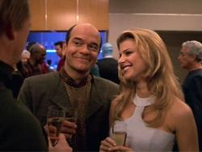 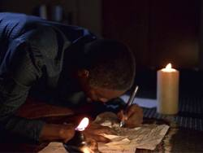 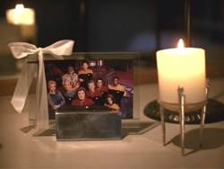 (Aqui j estamos com aproximadamente 15 minutos de exibio e termina a melhor parte do episdio; a propsito, a Voyager se tornou um museu no ptio do Presidio. Do gabinete da capit pode-se avistar Alcatraz.) 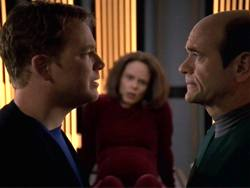 Tuvok j exibe os sintomas iniciais de sua doena neurolgica, mas o Doutor mantm a situao entre os dois, a pedido do paciente Vulcano. Enquanto isso, Seven e Neelix jogam pelo subespao, mas a partida de Kadis-Khot interrompida quando Seven descobre uma nebulosa aparentemente infestada de fendas espaciais. 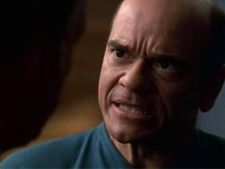 A almirante, com a ajuda de Miral Paris (um verdadeiro achado do pessoal de elenco na pessoa de sua atriz), encontrar-se com o Klingon Korath (vivido pelo homem mltiplo de Jornada, Vaughn Armstrong) para obter uma pea de equipamento fundamental para a sua viagem. Mas, depois que Korath se recusa em honrar o acordo original, Janeway rouba o equipamento. Ela segue em sua nave auxiliar com dois cruzadores Klingons em sua cola. Porm, a nave da almirante possui uma espcie de armadura que suporta o poder de fogo combinado das duas naves.
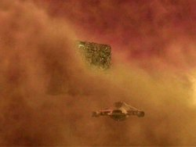 Futuro - A nave de Kim intercepta Janeway, mas a almirante convence o capito da importncia de sua misso e ele acaba ajudando-a em seu "desentendimento" com os Klingons. A almirante utiliza o dispositivo de Korath para abrir uma passagem espao-temporal at a Voyager do presente e se transporta para o quadrante Delta.
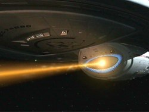 (Aqui j estamos com aproximadamente 45 minutos de exibio e o episdio perde a interessante estrutura narrativa de presente-futuro, o que acaba por prejudica-lo. Este o ponto em que o episdio foi cortado para ser exibido em duas partes nas reprises.) A almirante prope que a Voyager utilize a tecnologia de defesa que ela trouxe do futuro, passe pelos Borgs e entre em uma das fendas espaciais para voltar para casa. A capito Janeway aceita a proposta e so iniciados os preparativos para a misso. A rainha avisa a Seven, durante um dos ciclos de regenerao, que se a Voyager retornar nebulosa ela ser destruda. 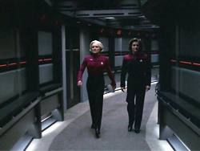 As duas Janeways discutem e se enfrantam, at a almirante contar sobre o que vir a acontecer a Tuvok, Seven e Chakotay. Preocupada, a capit vai at Tuvok, que confirma a sua doena e diz que a nica cura possvel um elo mental com um dos seus familiares - os quais esto todos no quadrante Alfa. A almirante tambm conta tudo para Seven, na esperana de que a ex-Borg possa fazer a capito mudar de idia, mas a nica reao de Seven romper o relacionamento com Chakotay. Um plano arriscado formulado, s que a capit quer a aprovao de todos, devido ao enorme risco envolvido. Kim, sempre o mais obcecado em voltar para casa, aprova o plano e prope um brinde no ao destino, mas sim jornada da Voyager. 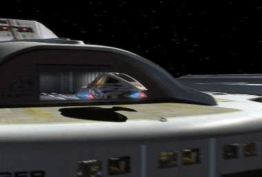 A Janeway do futuro se comove com os ltimos acontecimentos e articula um plano de apoio com a capit. A almirante vai ao encontro da rainha Borg em sua cidadela. Quando a majestade dos Borgs assimila a almirante, acaba cometendo um erro fatal. A almirante fora infectada com o agente patognico apresentado no episdio "Child's Play" e a rainha, a cidadela e a nave auxiliar da almirante so todas destrudas. A almirante d a vida para levar a sua tripulao para casa. 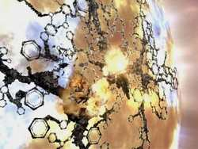 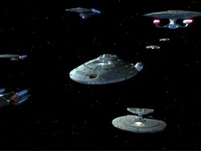
Comentrios Principais: A coisa mais certa que se pode dizer sobre esse segmento final de Voyager que a quarta encarnao de Jornada nas Estrelas "morreu como viveu". "Endgame" representa perfeitamente as virtudes e defeitos que marcaram toda a produo da srie. No se encontra no presente artigo uma justificativa formal desta afirmao (o que levaria a um gigantesco texto), mas os comentrios sobre o episdio examinam defeitos presentes na srie como um todo. 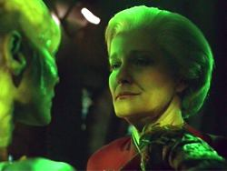 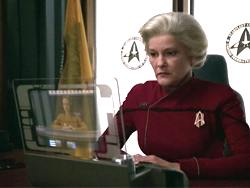 Ento, sob tal ponto de vista, a almirante Janeway um elemento de um futuro de um universo paralelo, universo que CONTINUOU a existir, mesmo com todos os eventos narrados no episdio e no qual o seu desaparecimento permanece, como disse "aquele" Tuvok: "um mistrio". 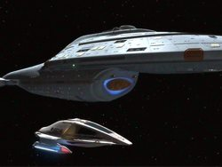 O fato de toda aquela tecnologia do futuro acabar na Terra simplesmente ridculo. E ainda: a existncia do tal "hub" transforma o incio do filme "Primeiro Contato" em uma bobagem sem tamanho. De fato, a existncia de tal estrutura transforma todas as tticas da coletividade com relao Terra em um amontoado de idiotices. 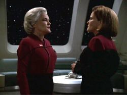 novamente arbitrrio, e mesmo arrogante, o fato de a almirante escolher exatamente sete anos da misso da Voyager no quadrante Delta como um "ponto de equilbrio" entre o estabelecimento dos relacionamentos da tripulao e a sobrevivncia dos membros desta mesma tripulao. 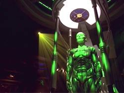 As cenas do futuro (do universo alternativo), especialmente os primeiros 15 minutos do episdio, contm os seus melhores momentos. Tal futuro interessante porque nele temos presentes e ausentes, tragdias e redenes, alegria e dor. Um cenrio com o qual possvel simpatizar, algo que definitivamente parece com a vida. Isto faz pensar: Ser que os eventos em "nosso" universo, que a almirante Janeway desencadeou, iro produzir um futuro similar? Ser que existiro outras (ou as mesmas) tragdias pessoais para esta tripulao no "nosso" futuro? (Outra coisa que se observa que os personagens parecem ter nesse futuro um elo muito mais forte entre eles do que no presente. Mais um ponto a favor das citadas cenas.) 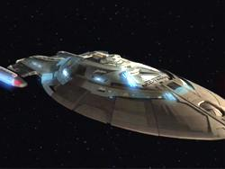 O fato de a tripulao no ter de fato que escolher entre voltar para casa e arrasar os Borgs lamentvel! Este tipo de situao que produz real drama, mas os roteiristas tomaram, como sempre, o caminho mais fcil. 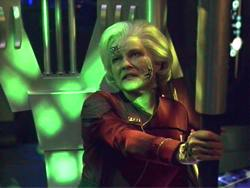 Estas so as idias gerais. No sero comentados detalhes mais finos da trama, pois a dita cuja simplesmente no merece o esforo. (Mais um fato importante que o episdio perde muito em andamento, quando a almirante Janeway chega ao presente, dissolvendo a estrutura de narrativa presente/futuro.)
Personagens (Onde aparecem os maiores problemas desta srie.) Os personagens funcionam melhor como suas contrapartes do futuro. simplesmente inaceitvel que suas verses do futuro alternativo representem, em um certo sentido, um fechamento adequado para eles em termos da srie como um todo. 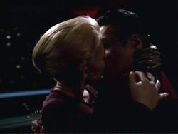 (O mais duro que tal relacionamento tenha bastante tempo de tela. Depois dessa bobagem difcil no concordar com as palavras do Robert Beltran: "-Os roteiristas de Voyager so uns idiotas".) De fato, se no fosse por essas cenas, Chakotay no teria muito que fazer devido forma que o episdio estruturado com duas Janeways. A esquecida perspectiva de um romance de Chakotay com Janeway no sugerida, mesmo que por sub-texto, em lugar algum. 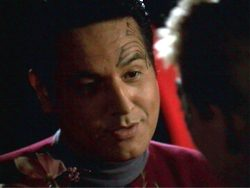 O Doutor tem uma melhor sorte, pois parte do seu fechamento ficou no bom episdio "Author, Author". Neste veculo, a possibilidade de um relacionamento dele com Seven vai para o "toilete", com direito a AINDA MAIS UMA "cena do Doutor, que, atravs somente de sub-texto, continua a tentar conquistar Seven em longo prazo" (a cena simplesmente deprimente, apesar do esforo de Picardo). Deve ser frustrante perder a Seven para um personagem em ETERNO estado de coma. O Doutor se sai bem como alvio cmico. Kim continua o eterno "bobo-da-corte". Seu brinde "no ao destino, mas sim jornada", que vai para o ralo com o final apresentado, beira a comdia involuntria. 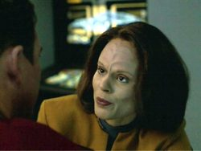 A participao de Neelix foi nfima (felizmente). Tuvok saiu com alguma dignidade e a referncia a Spock foi simptica. Pena que o nosso primeiro "Afro-Vulcano-Americano" (ou algo parecido) tenha sido to ridiculamente pouco (e mal) desenvolvido no curso da srie. Ele se notabilizou por falas como "Escudos a 50%" e as suas derivadas, "escudos a 40%", "escudos a 30%"... 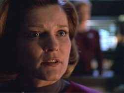 (Aparentemente a maquiagem da almirante Janeway era a mais leve dentre todas as verses futuras dos personagens? Parece que o capito Kim mais velho do que ela.) 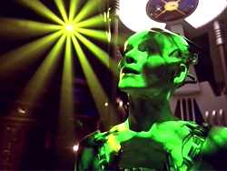
Valores de produo A direo de Alan Kroeker segura e confiante, seja com a cmera na mo ou na ponta da grua. As cenas com as duas Janeways so infinitamente bem executadas, sem exageros puramente estticos. Da maquiagem aos cenrios, o episdio visualmente soberbo. Um grande bnus vai para a equipe de efeitos visuais, pelo "hub transdobra". 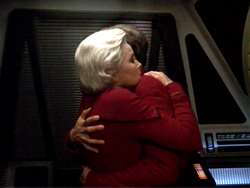 Schultz fez o seu bom trabalho usual, talvez s um pouco mais apagado do que de costume. Armstrong deu o seu melhor na pele do Klingon Korath. Kriege definitivamente consegue impor uma aura mais malvola rainha Borg do que Susana Thompson. Mas a indiferena pessoal do autor com relao personagem cresceu a tal ponto que isto essencialmente "irrelevante". Herd, Intiraymi e os demais no comprometeram. O destaque absoluto dentre os atores convidados (especialmente pelo pouco tempo de tela) , vai para Lisa Locicero como Miral Paris.
Outro pontos secundrios positivos - Tuvok e Kim envolvidos no jogo de Kal-Toh; - Seven e Neelix jogando Kadis-Khot on-line; - Chakotay e Janeway discutindo o substituto de Neelix; - o "bolo do beb"; - uma breve referncia espcie 8472; - uma breve referncia ao episdio "Unimatrix Zero".
Outros Pontos secundrios negativos - Paris e Janeway se abaixando enquanto a Voyager passa por baixo de um cubo Borg; - Janeway se apresentando como a especialista definitiva sobre os Borgs, barateando as experincias de Picard com a coletividade; - inmeras possibilidades de boa continuidade perdidas, mas a mais descarada o total esquecimento dos acontecimentos de "Unimatrix Zero", o ltimo "grande" episdio Borg antes de "Endgame"; - falta de fechamento para os personagens (especialmente com relao a questes no triviais envolvendo os Maquis, Tom Paris, Seven e o Doutor). A sugesto de que os acontecimentos das vidas dos personagens se desenrolem de forma similar aos apresentados no futuro alternativo insatisfatria para dizer o mnimo.
Concluso 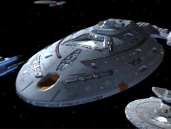 O episdio ainda assim recebe uma boa recomendao. A recomendao relativamente alta vai para o seu valor de entretenimento, em grande parte agregado aos excelentes valores de produo apresentados. O episdio fortemente recomendado aos fs tradicionais da srie, pois "Endgame" um autntico exemplar de Voyager, at o ltimo detalhe. Entretanto, qualquer esforo do autor em levar o episdio a srio ou extrair algum impacto ou satisfao emocional dele se mostrou intil. O que ser deste episdio daqui a uns cinco anos - talvez em muito menos tempo, alis - quando a qualidade dos efeitos visuais desaparecer? Uma nota final (e bastante cnica) sobre este episdio (e sobre a srie Voyager como um todo que, lembrando os ttulos dos segmentos finais das demais sries de Jornada nas Estrelas, Undiscovered Country (Srie Clssica), "All Good Things...(A Nova Gerao) e "What You Leave Behind" (Deep Space Nine), motivos literrios parecem vir mente. Lembrando do ttulo do episdio final de Voyager, "Endgame", um texto de videogame parece vir a mente. Sinal de tempos mais descartveis, aos quais, infelizmente, a quarta srie da franquia se adaptou, e bem.
Recomendao:
Apndice: Similaridades entre "Endgame" e "All Good Things..." (Similaridades associadas - na maior parte - ao futuro alternativo apresentado no episdio.) - Uma verso envelhecida da protagonista; - os uniformes da Frota Estelar no futuro; - cruzadores Klingons futuristas atacando uma nave comandada por uma mulher; - uma nave da Federao com camuflagem; - Torres como adida ao Imprio Klingon; - Paris como escritor; - um nico personagem capito e um nico personagem almirante; - um bizarro casal que ningum sabe de onde veio e cuja unio possui implicaes trgicas no futuro alternativo; - apresentada uma "verso upgrade" da nave principal da srie; - um personagem sofrendo de uma doena neurolgica degenerativa; - pulso de anti-tquions para fechar uma anomalia espao-temporal; - Barclay e Janeway se tornam professores. Alm da trama principal de "Endgame" ser bastante similar de "Timeless" - sem contar com um pequeno eco de "Time Squared", da segunda temporada de A Nova Gerao - , o que mais salta aos olhos so as similaridades deste com o episdio final da srie da turma de Picard e Data. Alm das similaridades por si, a interao entre elas s amplia a noo de estarmos assistindo a algo reciclado.) A estratgia de ataque aos Borgs da almirante Janeway remete claramente trilogia "camuflagem + supertorpedos + armadura", da Defiant. Tambm existe uma nave da classe Defiant, dentre as naves que escoltam a Voyager de volta pra casa.
|